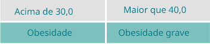

Exercício IMC
Resolva os exercícios a seguir alterando o arquivo script.js
-
Implemente na função 'IMC' o cálculo do número.
A fórmula é peso / (altura * altura).
Não esqueça que a função IMC deve retornar esse valor.
-
De acordo com a tabela abaixo, implemente a lógica da função
'faixaIMC' para,
recebendo o indice calculado no ex anterior
como parametro,
retornar a faixa que a pessoa se encontra.
Tabela IMC

Calculadora de IMC